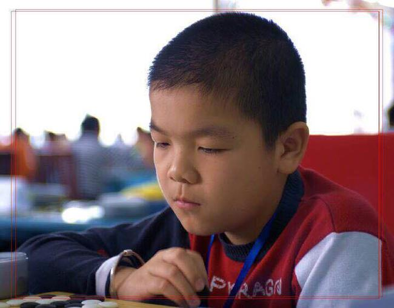
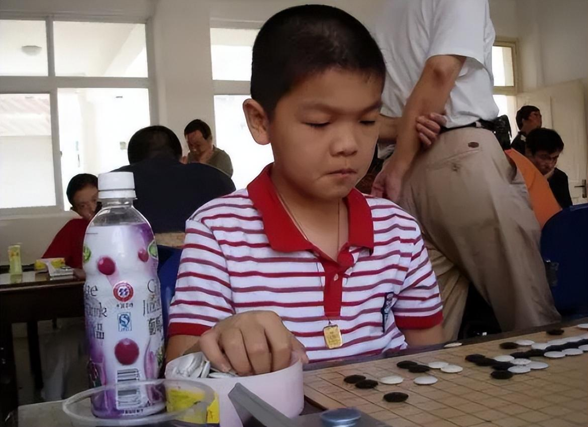
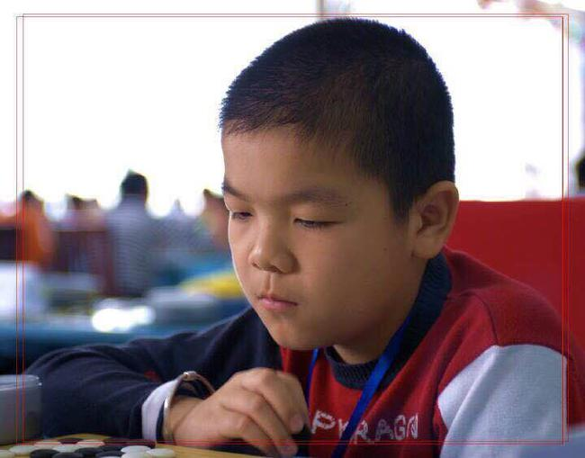
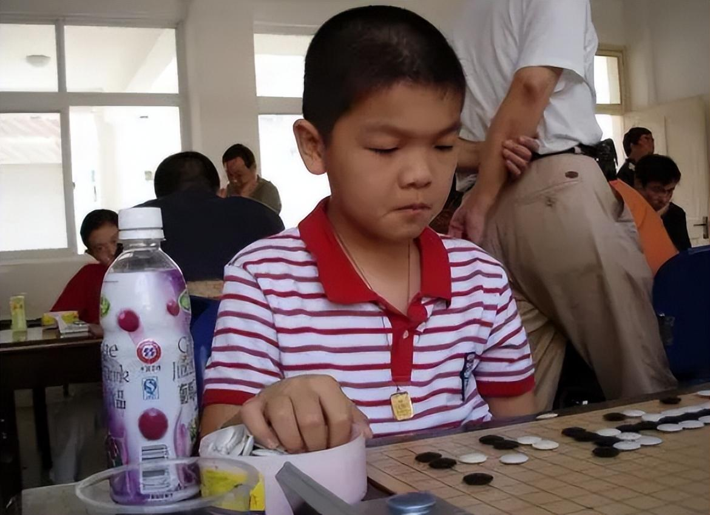

初出茅庐
在2005年2月，柯洁参加在杭州举行的浙江省山海杯少儿围棋赛，夺得乙组冠军，随后到北京聂卫平道场求学，进入道场后柯洁发现身边高手如云，自己在前两三年里完全处于垫底的位置，于是在弈城上注册了账号练棋，网名为“潜伏”。2011年到2015年的4年时间里，他在弈城对战总数为4033局。关于他下棋到底有勤奋，有这样的一个最高记录：一个月172局，一天接近6局。大多数人对这一点可能没什么概念，简单来说，职业棋手一局棋至少在一个至一个半小时左右，再加上复盘时间，也就相当于一天几乎不离开棋。柯洁也曾坦白：那段时间经常把自己关在房间里，饭也不吃，一股脑地下棋。
 


